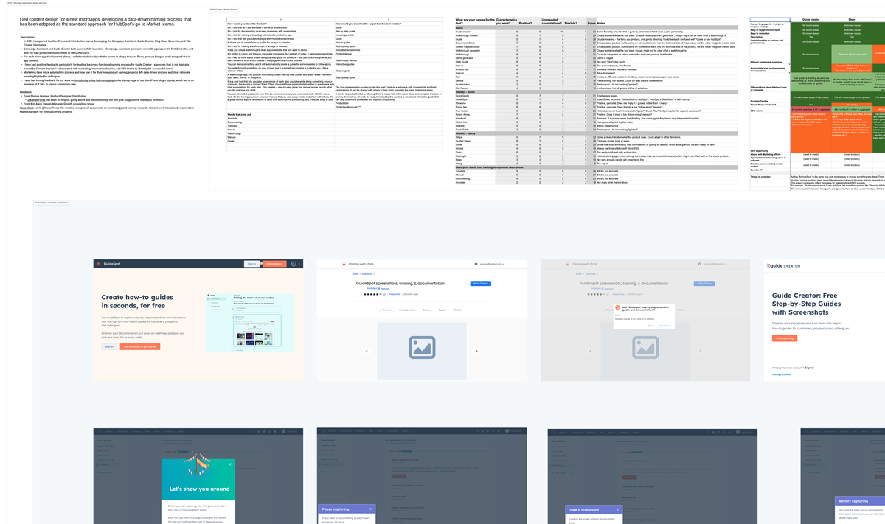

Four microapps, each needing a distinct identity.
In 2023, I supported the WordPress and Distribution teams with content design for four new microapps: Campaign Assistant, Guide Creator, Blog Ideas Generator, and Clip Creator. For each, I worked closely with the product and engineering teams to shape user flows, product bridges, and in-app content.
The lead product announcement at INBOUND 2023.
Campaign Assistant helped users generate marketing campaigns using AI. I designed the in-app content and user flows. The tool launched as the headline product announcement at INBOUND 2023 and generated over 3,000 signups in its first three months.
A data-driven naming process Marketing has since adopted.
Guide Creator required a name — and naming is not typically owned by Content Design. I led a cross-functional naming process, collaborating with Marketing, Internationalisation, and SEO teams to identify a name that worked across all dimensions.
The process was data-driven and documented with clear rationale. Colleagues specifically highlighted the approach. Marketing have since adopted this process for their own new product naming projects.

Value-led messaging for the WordPress plugin.
I also worked on the WordPress plugin signup page, introducing value-led messaging to replace generic copy. This led to an 8.56% increase in signup conversion rate.
Shipped tools, a new process, and measurable conversion growth.
Campaign Assistant shipped as INBOUND's headline announcement. Guide Creator launched with a name developed through a repeatable, cross-functional process that Marketing now uses as their standard. The WordPress plugin saw an 8.56% conversion uplift from the copy changes.